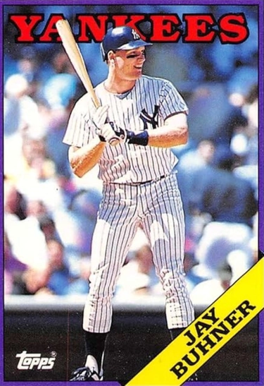

Jay Buhner "Bone"
Career Highlights & Facts
(Facts are AI-generated and may require verification)
- Inspired a popular stadium promotion where fans received free admission for having a shaved head.
- Hit for the cycle in a game that included a grand slam and a walk-off run scored in the 14th inning.
- Earned a defensive award for excellence in the outfield during the same season as a teammate.
Would you like to find out more about Jay Buhner?
Read Player Biography
Jay Buhner
April 7, 2021
/
in
BioProject - Person
1990s All-Stars
2001 Seattle Mariners
/
by
admin
This article was written by
Douglas Jordan
From 1995 through 1997, Jay Buhner was as prolific a home run hitter as any player in baseball. During those three years his 124 home runs exceeded those of his celebrated teammate
Ken Griffey Jr.
(122), 1995 MVP
Mo Vaughn
(118), 1996 MVP
Juan Gonzalez
(116), and 1993-94 MVP
Frank Thomas
(115). In addition to his prodigious power, Buhner was also a leader and vital on-field contributor to the 1995 Seattle Mariner team that earned the franchise’s first playoff berth since it was established in 1977. Buhner’s role with that historic team, along with his outgoing personality and never-ending hustle on the field, made him a fan favorite in Seattle.
Jay Campbell Buhner was born August 13, 1964, in Louisville, Kentucky. His parents, David Carl Buhner and Kay Cantrell Rose Buhner, were both graduates of the University of Kentucky who married in 1961.
1
David passed his love of hunting, fishing, and baseball on to his three sons: Jay, Ted, and Shawn.
2
David and Kay, and Jay’s maternal grandfather, C.C. Rose, were instrumental in Jay’s development as a baseball player. “Without my parents and my grandparents,” Buhner said, “no way I would have made it to the major leagues. No way. They were the batting practice pitchers, the shaggers, the car pool leaders, the number one fans. They did everything.”
3
Jay wasn’t the only professional baseball player in the family. His brother Shawn had a six-year career in the Mariner minor league system, peaking with one season in AAA.
Jay spent his first 14 years in Louisville before the family moved to Philadelphia and then to Texas, where his father worked as a chemist at Dixie Chemical in Houston.
4
He played high school ball at Clear Creek High School near League City, Texas, under coach Jim Mallory. Mallory gave Buhner his nickname, “Bone.” After Buhner took a ball off his head but still made the play, Mallory commented that it was a good thing Jay had a bony head.
5
“Bonehead” was shortened to “Bone” and the nickname stuck.
Buhner did not always dream of playing in the big leagues. “When I was younger, I never thought there was life after high school baseball. I never thought about the pros or even college. I didn’t know there was such a thing as a scholarship.” He went to McLennan Community College in Waco, Texas, because two of his Clear Creek teammates were going there. McLennan turned out to be a great fit for the sometimes-mercurial Buhner. Head coach Rick Butler was a strict disciplinarian who had a positive influence on Jay on and off the field. Buhner credits Butler with turning him into an excellent defensive outfielder. “If we misplayed a ball in practice, we had to do what we called a supersprint,” Buhner recalled. “You had to drop your glove and run to the opposite foul line and back in less than 60 seconds. That’s where I first took pride in my defense.” Buhner’s contributions on both defense and offense (he batted .327 and led the team in home runs) helped McLennan win the junior college national title in 1983.
6
His play at McLennan drew the attention of big-league scouts. Drafted by the Atlanta Braves in the ninth round of the 1983 draft, he elected not to sign. Drafted by the Pittsburgh Pirates during the second round of the secondary free agent draft in January 1984, he signed on May 26, 1984. Assigned to Watertown in the New York-Pennsylvania League, he made the league’s All-Star team along with future big leaguers
Jamie Moyer
and
Kevin Elster
.
7
Following that season, Pittsburgh traded Buhner (along with
Dale Berra
and
Alfonso Pulido
) to the New York Yankees for
Steve Kemp
,
Tim Foli
, and cash.
Buhner remained in the Yankee minor league system for three-and-one-half seasons before being called up to the big club for seven games in September 1987. After starting the 1988 season in AAA, he returned to the Yankees in May and began playing regularly in the outfield in June. Buhner found his time with the Yankees very rewarding. “The great thing about the Yankees was that every level I played at, we won.
Bucky Dent
was my manager at every level, and he was awesome. He taught me how to win. Then when I moved up to the big leagues, I was surrounded by veterans who were great to me:
Dave Winfield
,
Jack Clark
,
Jose Cruz
,
Rickey Henderson
,
Don Mattingly
. I couldn’t have asked for a better place to break in.”
8
But the rookie with potential was traded to the Seattle Mariners at the trading deadline for a veteran with power,
Ken Phelps
. The trade has been questioned ever since, and became famous nationally when on the
Seinfeld
television show, Jerry Stiller (as Frank Costanza) berates Larry David (as
George Steinbrenner
) with the line, “What did you trade Jay Buhner for? … You don’t know what you’re doing!”
9
Upon joining the Mariners, Buhner was immediately inserted into the lineup, but he struggled at the plate. Although he hit ten home runs in 60 games that year, he batted just .224 and struck out 68 times in 192 at bats. Jay started the 1989 season in AAA Calgary and was asked to work on cutting down his strikeout rate.
10
He was called back up to the big club on June 2, but injured his right wrist on June 27 when he slammed into the outfield wall against Kansas City.
11
The time in Calgary proved helpful, however. In 58 games he had a .275 batting average, just 55 strikeouts in 204 at bats, and hit nine home runs.
Buhner did not start the 1990 season with the Mariners — but for a different reason. This time he suffered a sprained right ankle on a pick-off play during spring training.
12
He was anxious when he returned to the Mariners on June 1. “I’m glad this one is over with. I was so nervous I think I went to the restroom ten times.” The nerves didn’t impact his performance. Buhner hit a grand slam in his first at bat after returning from the injured list. But the injury bug bit him again soon thereafter. He broke a bone in his right forearm when he was hit by a pitch in the June 16 game against the Rangers and was out of action until August 23.
13
For the 1990 season, Buhner played in 51 games, hit seven balls out of the park, and had a .276 batting average with 50 strikeouts in 163 at bats.
After four seasons splitting time between the majors and minors, Buhner’s apprenticeship was over. Beginning with the 1991 season, he became the Mariners starting right fielder. On May 30, a first inning, three-run home run off
Kenny Rogers
of the Texas Rangers set the stage for a six-RBI game. A couple of months later, he put on an impressive display of power in consecutive series against the Orioles and Yankees. On July 20 in Baltimore, he smashed a home run that travelled 463 feet. Five days later he bettered that mark with a 479-foot blast at Yankee Stadium. Of the home run at Yankee Stadium, Buhner said, “Every player has his career shot and I think that is mine.”
14
A few weeks later on August 12, Buhner hit two home runs off reigning Cy Young Award-winning pitcher
Bob Welch
. He finished with 77 RBIs and a team-leading 27 home runs in 137 games.
Buhner got off to a slow start in 1992. At the end of May he was batting .232 with just five home runs. However, he got hot in late June, and hit nine homers in 19 games to end the first half of the season.
15
Buhner hit a grand slam in Detroit on July 3, and two home runs off
Scott Sanderson
at Yankee Stadium on July 10. Those two homers, and another long ball two days later, gave him a total of seven dingers against his former Yankee teammates since being traded to the Mariners.
16
Maybe Frank Costanza was right!
Buhner continued to improve in 1993. He had three games that season with four RBIs. In one of those games, on May 17, he hit a three-run home run and a solo homer against the Rangers in Texas. On June 23 he became the first Mariner to hit for the cycle. His home run that game was a grand slam, and he scored the winning run after a triple in the fourteenth inning. He continued to pound out home runs at Yankee Stadium with two more over the course of the season. He had 17 home runs by the All-Star break, and 27 on the season. He finished the season with new highs in games played (158), hits (153), doubles (28), and RBIs (98). His .272 batting average was just a few points below his career high of .276.
Before the 1994 season, the press focused on the potential offensive production of a Mariner outfield consisting of Buhner, Griffey Jr. and
Eric Anthony
. As befitted the pride he took in his arm and glove play, Buhner wanted to draw attention to the trio’s defensive prowess. He said, “I wish there was more talk about our defense. All you hear about is how many home runs we’re capable of hitting. I think we’re all capable of winning a Gold Glove.”
17
Buhner’s comment proved prescient. Although Anthony never won one, both Griffey Jr. and Buhner won Gold Gloves in 1996. It wasn’t just talk from Buhner, either. On July 1, 1994, with the Mariners leading, 4-3, in the bottom of the ninth, Buhner slammed into the right field wall at Yankee Stadium taking a potential game-tying hit away from
Randy Velarde
.
18
Griffey called it, “The best catch I’ve seen Jay make.” Buhner bruised his pelvis on the play and couldn’t take right field again until after the All-Star break.
In addition to his stellar defense, Buhner’s offense also could not be ignored in 1994. On April 19, he hit two more home runs at Yankee Stadium on the way to another four-RBI game. (He finished his career with 19 home runs in the Bronx ballpark.) His season total of 21 home runs in 1994 was lower than the previous three seasons, but the players went on strike on August 12 (ending the season) so Buhner played in just 101 games that year. At the rate he was hitting long balls, he would have had a career-high 31 homers if he had played in 150 games. He was also on pace to drive in 100 runs, and finished the shortened season with a career high .279 batting average.
The Mariners took advantage of Jay’s popularity with Seattle baseball fans. Buhner’s signature bald head inspired the marketing promotion Buhner Buzz Cut Night from 1994 to 2001. Fans received free admission if they were bald or had their head shaved before the game. Buhner himself would sometimes help shave heads. The number of participants was an indication of the growth of Buhner’s popularity. In 1994, the first year of the promotion, 512 fans (including two women) participated. During the last year of the event, 6246 fans (including 112 women) took part.
19
Playing on his nickname, Buhner’s walk-up song before his at bats was “Bad to the Bone” by George Thorogood and the Destroyers. And the section of seats behind him in right field was referred to as “The Boneyard.”
Before the 1995 season, Buhner was offered a lucrative four-year $18 million contract by the Orioles. He declined that offer and accepted a three-year $15.5 contract with the Mariners, saying, “We have a chance to win the division next season and hopefully a new stadium. I want to be around to see that.”
20
Strong lobbying by Ken Griffey Jr. on Buhner’s behalf helped persuade Mariner management to increase their offer to Buhner. A grateful Buhner offered to pay for all of Griffey’s lunches during the season. Griffey joked, “I will make a list of all the places I want to eat and give them to Jay before each road trip.”
21
By 1995, the Mariners and Buhner were both ready to live up to their potential. Buhner entered the season as a 30-year old with eight seasons of big league experience. He was poised for a big season, and he had it. He played in 126 games, drove in 121 runs, and crushed a then career-high 40 home runs, tying Frank Thomas for second place in the American League behind
Albert Belle
’s 50. Buhner had two games with five RBIs, and six other games where he drove in four runs. In two of his four-RBI games, the four runs came in with a lone swing of the bat as Jay cleared the bases with a grand slam. Buhner placed a career-high fifth in the MVP voting, behind winner Mo Vaughn.
It’s difficult to separate Buhner’s personal accomplishments in 1995 from the Mariners’ success that year. The Mariners were just five games out of first place at the end of June. But sub-.500 play in July left them trailing the Angels by 13 games on August 2 before they started to climb back into contention. By the end of August, they were back in the race, trailing the Angels by only seven and one-half games. For baseball fans in Seattle, the pennant race of September 1995 was unforgettable. Buhner was a key contributor to the Mariners’ campaign during the crucial stretch run. His leadership was also instrumental. In late August, after the team lost four of five games at home, Buhner called a players-only meeting. Jay said, “The session ended with the players committed to putting our guts on the field every day and see what happens.”
22
The team responded with seven wins in the next ten games. In three games September 11-13, he drove in 13 runs. For the month, he hit 14 home runs and had 33 RBIs.
The Mariners slowly closed on the Angels and climbed into a tie for first place on September 20. The two teams stayed close the rest of the month, and finished the season in a dead heat. The Mariners won a coin toss to determine home field, and then won the single game at the Kingdome to decide the division crown behind a pitching gem by
Randy Johnson
. The Mariners beat the Yankees in the divisional round before falling to the Indians in the ALCS.
To complicate the situation in 1995, the Mariners’ owners were threatening to move the team if a new stadium was not built to replace the decrepit Kingdome. A proposal to fund a stadium with a package of new taxes was put before the Seattle electorate in mid-September. That proposal was rejected by voters in a very close vote. But the success of the team on the field that month, and the groundswell of enthusiasm that accompanied it, compelled the state legislature to authorize bonds for a new stadium.
23
Given Buhner’s important contributions to the on-field success of the Mariners that month, it can be argued that he played an essential part in saving baseball for the city of Seattle.
Buhner and the Mariners started the 1996 season just as they had finished in ‘95: Buhner pounding long balls, and the Mariners winning ball games. On May 11 at home against Kansas City, Buhner went four-for-four, hit two home runs, and had another six-RBI game. He also had an early season two-homer game with five RBIs against Milwaukee, and continued to launch rockets at Yankee Stadium, hitting a home run there in May and two more in August. By the All-Star break, 23 of his hits had gone over the fence, and Buhner was selected to the American League All-Star team for the only time in his career. As usual, he was more interested in his defense. When he was selected to the All-Star team, he said receiving a Gold Glove would be a bigger honor.
24
He earned that honor after the season ended when he and Griffey were both awarded Gold Gloves. For the season, Buhner finished with career highs in runs (107), hits (153), doubles (29), home runs (44), and RBIs (138). His home run total was tied for seventh highest in baseball. As a team, the Mariners were in the race all season, but finished four-and-one-half games out of first place.
In early 1997, Buhner was pleased to sign a two-year contract extension. He said, “My family and I are extremely happy to be staying in Seattle. We have made the Pacific Northwest our home, and I’m really looking forward to wearing a Mariners uniform when the new ballpark opens.”
25
Jay got his wish. He would be in the starting lineup when Safeco Field opened on July 15, 1999.Buhner continued to play well in 1997. He hit home runs in four consecutive games in May, had another five-RBI game in June, and hit two more home runs (one off
Mariano Rivera
) at Yankee Stadium. He also continued to play terrific defense, making two great catches at Fenway Park in a game against the Red Sox. He hurled his body into the Red Sox bullpen on one of them to steal a home run from catcher
Scott Hatteburg
. Boston bullpen coach
Herm Starrette
said, “That was one of the great catches I’ve seen in my 37 years.”
26
For the 1997 season, Buhner played in 157 games, scored 104 runs, drove in 109 runs, and banged a total of 40 homers (tied for eighth best in baseball). Buhner was only the tenth player in major league history to hit 40 or more home runs in three consecutive years.
27
However, Jay had strikeout issues again as he led the major leagues with 175 Ks. Buhner and Griffey combined to hit 96 homers, still (as of 2020) the tenth highest total ever for a pair of teammates.
28
The Mariners’ potent offense led the team to an AL West division title, but the team lost to the Baltimore Orioles in the divisional round of the playoffs.
The next two seasons saw Buhner again beset by injuries. Knee
29
and elbow
30
injuries limited him to 72 games and 15 home runs in 1998. He also missed time with a right ankle
31
injury in 1999. He played in 87 games and had 14 home runs that year. However, his tenth long ball on August 9, 1999, was noteworthy. It was the fifth grand slam hit across baseball that day, the first time in baseball history that five grand slams had been hit in one day.
32
The record has since been broken.
In 2000, the Mariners deliberately rested Buhner often.
33
He responded with a productive season of 26 HRs, 82 RBIs and a .253 batting average in 112 games. The Mariners won 91 games and beat the White Sox in the division series before losing to the Yankees in the ALCS. The Mariners of 2001, who acquired
Ichiro Suzuki
before the season started, were one of the greatest teams of all time, tying the record for wins with 116. Buhner was not a significant contributor to the team. He injured his left arch in spring training, and missed most of the season.
34
He played in just 19 games during September and October, finishing with two home runs and a .222 batting average. For the second year in a row, the team fell to the Yankees in the ALCS.
After 14 years with the Mariners, the parade of injuries finally forced Buhner to retire following the 2001 season. He finished his 15-year career with a .254 batting average, 310 home runs, and 965 RBIs. Buhner was sorry he didn’t get to 1000 RBIs. He said, “Driving in runs was my game, and I’d surely liked to have reached a grand, but, hey, it’s not meant to be. I think everyone knows I’d have been there except for the injuries.”
35
In 2004, Buhner was inducted into the Mariners Hall of Fame. Only Ichiro Suzuki and Ken Griffey Jr. played more games as a Mariner outfielder.
36
Jay and his wife, Leah, decided to raise their three children (Brielle, Chase, and Gunnar) in the Pacific Northwest after his retirement.
37
His post-retirement activities included color commentary on selected Mariners broadcasts, speaking engagements with corporations and other organizations, minority ownership in Northwest Motorsport, and the charitable work for the Cystic Fibrosis Foundation that he started during his playing days. When asked why he thinks he’s so popular, he replied, “Really, I was just a Texas boy, blue-collar, shoot from the hip. I would say what was on my mind, and I think people appreciated that. On the field, I had one throttle. I always played the game aggressively, didn’t worry about getting beat up, though the turf would certainly do that. … I think the fans appreciated that, too.”
38
Last revised: April 8, 2021
Acknowledgments
Special thanks to Tim Herlich for providing the sources of information on Buhner’s parents and to Paul Proia for his careful review. This biography was also reviewed by Norman Macht and fact-checked by David Kritzler.
Sources
In addition to the sources cited in the Notes, the author also consulted Baseball-reference.com.
Notes
1
Obituaries,
The Houston Chronicle
,
https://www.legacy..aspx?n=kay-cantrell-rose-buhner&pid=134469385&fhid=2698
, (last accessed February 1, 2021).
2
Obituaries,
The Houston Chronicle
,
https://www.legacy..aspx?n=david-buhner&pid=159558646
, (last accessed February 1, 2021).
3
Rich Bozich, “Local Boy Buhner Was Big Hitter From Start,”
The Courier-Journal
(Louisville, Kentucky), May 21, 1996.
4
Mark Yuasa, “Ex-Mariner Jay Buhner Scores as Big with Reel as with Bat,”
The Seattle Times
, October 1, 2011.
5
Gerry Calahan, “A Real Cutup: Seattle Mariners Slugger Jay Buhner May Look Like a Fiend, But He’s Actually a Fun Loving, Fan Friendly Star with Only One Revolting Habit,”
Sport Illustrated
, March 18, 1996.
6
Calahan, “Seattle Mariners Slugger Jay Buhner May Look Like a Fiend, But He’s Actually a Fun Loving, Fan Friendly Star with Only One Revolting Habit.”
7
Minor Leagues,
The Sporting News
, September 10, 1984: 29.
8
Calahan, “Seattle Mariners Slugger Jay Buhner May Look Like a Fiend, But He’s Actually a Fun Loving, Fan Friendly Star with Only One Revolting Habit.”
9
Steven Goldman, “There Will Never Be Another Jay Buhner-For-Ken Phelps Deal,”
https:
, (last accessed January 9, 2021).
10
Jim Street, “Buhner a Happy Camper Again on Return to M’s,”
The Sporting News
, July 3, 1989: 20.
11
Baseball, “Mariners,”
The Sporting News
, July 17, 1989: 21.
12
Baseball, “Buhner is Tipped Off, Picked Off, Ticked Off,”
The Sporting News
, April 16, 1990: 18.
13
Baseball, “Hard-Luck Buhner Back on Disabled List,”
The Sporting News
, June 25, 1990: 12.
14
Baseball, “A.L. West,”
The Sporting News
, August 5, 1991: 30.
15
Baseball, “A.L. West,”
The Sporting News
, July 27, 1992: 32.
16
Baseball, “A.L. West,”
The Sporting News
, July 27, 1992: 32.
17
Jim Street, “A.L.,”
The Sporting News
, March 21, 1994: 18.
18
Jim Street, “A.L. West,”
The Sporting News
, July 11, 1994: 38.
19
David Andriesen, “It’s Shear Joy for Buhner”,
Seattle Post-Intelligencer
, May 31, 2001,
https:
, (last accessed January 20, 2021).
20
Jim Street, “A.L.,”
The Sporting News
, January 2, 1995: 39.
21
Jim Street, “Baseball,”
The Sporting News
, January 9, 1995: 39.
22
Jim Street, “The Road to Respect,”
The Sporting News
, September 18, 1995: 14.
23
David Wilma, “King County voters reject a stadium for the Seattle Mariners on September 19, 1995,”
https://www.historylink.org/File/3429
, (last accessed January 17, 2021).
24
Jim Street, “A.L.,”
The Sporting News
, October 21, 1996: 23.
25
Jim Street, “A.L.,”
The Sporting News
, February 17, 1997: 24.
26
Peter Schmuck, “Baseball,”
The Sporting News
, August 11, 1997: 27.
27
Jim Street, “Baseball,”
The Sporting News
, June 15, 1998: 40.
28
Sporacle, “Can you name the two teammates with the most home runs?”
https://www.sporcle.com/games/rk559/auckland
, (last accessed January 18, 2021).
29
Jim Street, “Baseball,”
The Sporting News
, April 27, 1998: 30.
30
Jim Street, “Buhner Out 6-8 Months After Surgery on Elbow,”
The Sporting News
, September 21, 1998: 73.
31
Larry LaRue, “Baseball,”
The Sporting News
, February 28, 2000: 56.
32
This Day in Baseball, “This Day in Baseball August 9,”
https://thisdayinbaseball.com/this-day-in-baseball-august-9/
, (last accessed January 19, 2021).
33
Larry LaRue, “Healthy, Productive Buhner Likely Will Get Another Year,”
The Sporting News
, October 2, 2000: 64.
34
Larry LaRue, “Buhner is Aiming for a September Return,”
The Sporting News
, August 20, 2001: 37.
35
Bob Finnigan, “After 14 years with M’s, Buhner retires,”
The Seattle Times
, December 18, 2001,
https://archive.seattletimes.com/archive/?date=20011218&slug=mariners18#:~:text=After%2014%20seasons%20patrolling%20the,Buhner%20has%20decided%20to%20retire
, (last accessed January 20, 2021).
36
Mariners 2020 Media Guide, page 181,
https://www.scribd.com/document/447671525/2020-Media-Guide
, (last accessed January 20, 2021)
37
Calahan, “Seattle Mariners Slugger Jay Buhner May Look Like a Fiend, But He’s Actually a Fun Loving, Fan Friendly Star with Only One Revolting Habit.”
38
Brice Cherry, “Where Are They Now? Jay Buhner Enjoyed Time at MCC, Seattle Mariners and Beyond,”
Waco-Tribune-Herald
, July 25, 2015,
https:_f0d78ef7-e5a4-5c4e-b504-0cb7136ec78a.html
, (last accessed January 20, 2021).
Full Name
Jay Campbell Buhner
Born
August 13, 1964 at Louisville, KY (USA)
Stats
Baseball Reference
Retrosheet
Tags
1990s All-Stars
·
2001 Seattle Mariners
Career Totals
| WAR | AB | H | HR | BA | R | RBI | SB | OBP | SLG | OPS | OPS+ |
|---|---|---|---|---|---|---|---|---|---|---|---|
| 23.0 | 5013 | 1273 | 310 | .254 | 797 | 965 | 6 | .359 | .494 | .852 | 124 |
Statistics via Baseball-Reference.com
The Original Clue